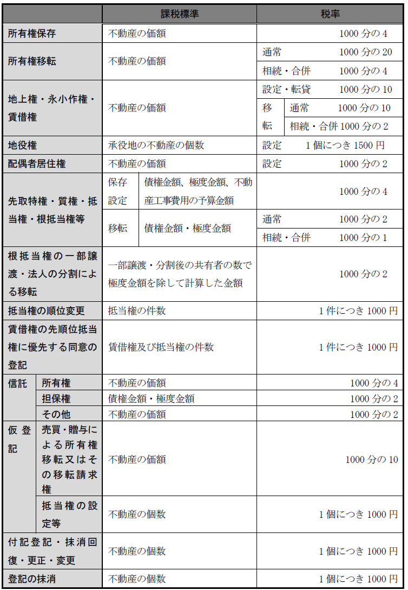
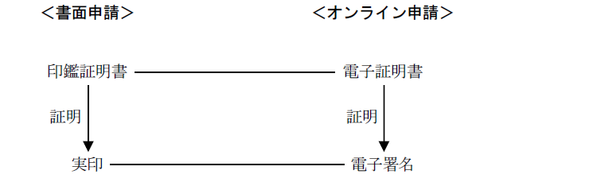

第２編 総 論
第２章 申請手続全般
第３節 登録免許税
不動産登記の申請をする場合には、例外的に不要とされる場合を除き、登録免許税という税金を納付しなければならない。
登記等を受ける者は、この法律により登録免許税を納める義務がある（登免法3条前段）。この場合において、当該登記等を受ける者が2人以上あるときは、これらの者は、連帯して登録免許税を納付する義務を負う（登免法3条後段）。
1. 主なもの

ex.土地の売買契約に基づく所有権移転の登記を申請する場合、土地の課税標準額が金1000万円であれば、登録免許税は、「課税標準×税率」に当てはめて、1000万円×1000分の20で、金20万円となる。
2. 注意すべき事項
(1) 非課税となる場合
①国などが自己のために受ける登記及び国などが代位によってする登記（登免法4条1項、5条1号）
ex.東京都が抵当権者となる抵当権設定の登記
（注）抵当権の順位変更の登記において、申請人全員が、国又は非課税法人であるならば、登録免許税は課税されない。しかし、申請人の一部が、国又は非課税法人であっても、非課税にはならず、国又は非課税法人の分も含めて課税される（昭48.10.31民3.8188）。
②登記機関が職権に基づいてする登記（登免法5条2号）
③住居表示の実施又は変更に伴う登記事項の変更の登記（登免法5条4号）。
なお、一の申請情報で住所移転及び住居表示の実施による登記名義人表示変更の登記を申請する場合で、最終の登記原因が住居表示の実施のときも、登録免許税は課されない（昭40.10.11民甲2915）。
④行政区画、郡、区、市町村内の町若しくは字又はこれらの名称の変更（その変更に伴う地番の変更を含む。）に伴う登記事項の変更の登記（登免法5条5号）
なお、住所移転後に行政区画の変更があった場合における登記名義人の住所変更の登記の登録免許税も、登録免許税法5条5号の適用により非課税となる（平22.11.1民2.2759）。
⑤墳墓地に関する登記（登免法5条10号）
もっとも、例えば、Ａ登記所の管轄に属する墓地甲について根抵当権の設定の登記がされた後、Ｂ登記所の管轄に属する宅地乙について墓地甲と共同根抵当とする根抵当権の設定の登記を申請する場合の登録免許税額は、課税標準の金額に1000分の4を乗じた額である（昭50.8.6民3.4016）。この場合、Ａ登記所では登録免許税を納付していないので、追加設定について不動産1個につき1500円とする登録免許税法13条2項の適用はない。
⑥滞納処分（その例による処分を含む。）に関してする登記（登免法5条11号）
⑦登記機関の過誤による登記又はその抹消があった場合の、当該登記の抹消若しくは更正又は抹消した登記の回復の登記（登免法5条12号）
(2) 相続関係登記の特例
遺贈による所有権移転の登記の登録免許税は、不動産の価額に1000分の20を乗じた額である（登免法別表1.1.(2)ハ）。
ただし、受遺者が相続人であることを証する情報（戸籍謄抄本等）を添付すると、1000分の4を乗じた額となる（平15.4.1民2.1022）。
(3) 地上権等の設定されている、土地又は建物の取得の場合
地上権、永小作権、賃借権若しくは採石権の設定の登記がされている土地又は賃借権の設定の登記がされている建物について、その土地又は建物に係るこれらの権利の登記名義人がその土地又は建物の取得に伴いその所有権の移転の登記を受けるときは、通常の所有権移転の税率に100分の50を乗じて計算した割合になる（登免法17条4項）。これらの権利の登記名義人は、その権利の取得の際に1000分の10の税率で登録免許税を納付しているからである。
ex.賃借権の設定の登記がされている建物について、その賃借人がその建物の取得に伴いその所有権の移転の登記を受ける場合
なお、申請書には、登録免許税額を記載した後に、括弧書で根拠条文を記載しなければならない。
(4) 仮登記に基づく本登記の場合
不動産の価額を課税標準とする登記については、仮登記の登録免許税が、本登記の場合の税率の2分の1とされたため、仮登記に基づく本登記の際に、その分の税率が控除され（登免法17条1項）、残りの2分の1が課されることとなる。
ex.売買による所有権移転の場合、仮登記の際に1000分の10の税率で課税され、仮登記に基づく本登記の際に、1000分の20から1000分の10を控除した割合（つまり1000分の10）で課税されることとなり、最終的には1000分の20の割合で計算したときと同額の登録免許税を納付することとなる。
この場合も、申請書には、登録免許税額を記載した後に、括弧書で根拠条文を記載しなければならない。
※地上権の登記名義人が仮登記権利者として行う仮登記に基づく本登記を申請する場合、登録免許税法17条4項を適用してから同条1項が適用され、登録免許税の税率は、1000分の10から1000分の10を控除した0となる。よって、登録免許税の額は1000円となる（登免法19条）。
(5) 氏名・住所変更・更正の場合
氏名又は住所の変更登記又は更正登記は、どのような組合せであっても、1の申請情報で申請することができる（不登規35条8号）。この場合には、その組合せにより、以下のように登録免許税の額が異なる。
| 氏名の変更 | 氏名の更正 | |
| 住所の変更 | 金1000円 | 金2000円 |
| 住所の更正 | 金2000円 | 金1000円 |
ex.氏名だけの変更も、氏名と住所をともに変更する場合も、金1000円となる。氏名を変更し、住所を更正する登記申請の場合は、金2000円となる（昭42.7.26民3.794）。
3. 計算方法（不動産価額又は債権額を課税標準とする場合）
(1) 課税標準の計算方法
(a) 1000円未満の端数は切り捨てる。
ex.不動産の価額等の金額が1500万1500円の場合、1000円未満の端数は切り捨てるから（国通法118条1項）、課税標準の額は、1500万1000円となる。
(b) 1000円未満の場合、1000円とする（登免法15条）。
ex.不動産の価額等の金額が500円の場合、課税標準の額は、1000円となる。
(c) 同一の申請情報で、複数の不動産について登記を申請する場合の計算方法
ex.甲不動産が1500万1500円、乙不動産が1500万1600円である場合、課税標準の額は、数個の不動産の価額の合計額であり、合計前の個々の不動産の価額については端数計算をしない（昭42.7.26民3.794）。
つまり、甲不動産及び乙不動産の課税標準の額をそれぞれ合計する前に、1000円未満の部分の端数を切り捨てて、1500万1000円＋1500万1000円＝3000万2000円とは計算しない。1500万1500円＋1500万1600円＝3000万3100円とし、1000円未満の部分の端数を切り捨て、3000万3000円と計算する。
(2) 登録免許税の計算方法
(a) 国税の確定金額に100円未満の端数があるときは、その端数を切り捨てる（国通法119条1項）。
ex.課税標準価額が12,346,000円である土地の売買に係る登録免許税の額は、246,920円となるが、100円未満の端数は切り捨てられるので、246,900円となる。
(b) 登録免許税法別表に掲げる税率を適用して計算した金額が1000円に満たないときは、当該登記に係る登録免許税の額は、1000円となる（登免法19条）。
ex.登録免許税法別表に掲げる税率を適用して計算した金額が800円であるときの登録免許税の額は、1000円となる。
4. 抹消登記の登録免許税
(1) 登記の抹消（土地又は建物の表題部の登記の抹消を除く）の登録免許税額は、不動産1個につき、1000円である（登免法別表1.1.(15)）。
(2) ただし、同一の申請書により20個を超える不動産について登記の抹消を受ける場合には、申請の件数1件につき2万円である（登免法別表1.1.（15）括弧書）。
ex.ゴルフ場用地が、100筆もの土地である場合、その土地に設定された共同抵当権を、同一の申請情報ですべて抹消する場合には、①で考えると、登録免許税額は、10万円であるが、②なら2万円で済み、お得になるわけである。
1. 書面申請及び電子申請の双方で認められる方法
(1) 現金納付
登録免許税の納付に係る領収証書を登記等の申請書にはり付けて提出する方法（現金納付、登免法21条）
(2) 印紙納付
登録免許税の額に相当する金額の印紙を登記等の申請書にはり付けて提出する方法（印紙納付、登免法22条）
2. 電子申請のみに認められる方法
歳入金電子納付システムを利用して納付する方法（登免法24条の2第1項本文、登免規23条1項）
1. 登録免許税が納付されない場合
登録免許税を納付しないときは、不動産登記法25条12号の却下事由に該当する。また、不足額を供託すれば登記を受けることができる旨の規定は存在しないので、不足額を供託しても、登記を受けることはできない。
なお、登記が完了した後に、税務署長が当該登記の申請について納付すべき登録免許税の額の一部が納付されていない事実を知った場合には、税務署長は、登記官から税務署長に対する不足額未納の通知がされた他、自らが納付していない事実を知ったときにも、不足額の徴収をすることができる（登免法29条）。
2. 登録免許税の還付
(1) 登録免許税が還付される場合
①登記の申請が却下された場合
②登記の申請が取り下げられた場合（再使用証明をする場合を除く）
③再使用証明を受けた者が、当該証明を無効とするとともに、現金還付を受けたい旨の申出をした場合
④過誤納があった場合
もっとも、抵当権の債権額を減額する更正登記をした場合に、債権額の差額分に課税された登録免許税を過誤納として還付の請求をすることはできない。
また、国からの払下げによる不動産に関する所有権移転の登記が、払下げを受けた登記名義人以外の第三者名義になされた場合において、錯誤を原因として、当該登記につき嘱託により抹消の登記がされたときであっても、既に納付した登録免許税は還付されない（昭40.3.1民甲482）。
⑤いったんされた登記が、登記官の職権によって抹消された場合（昭43.4.2民3.88）
(2) 所轄税務署長への通知
上記①②④の事実がある場合、登記機関は、遅滞なく、登録免許税の額等所定の事項を納税地の所轄税務署長に通知しなければならない（登免法31条1項）。④の事実がある場合には、登記を受けた者は、当該登記を受けた日から5年を経過する日までに、その旨を登記機関に申し出て、上記通知をすべき旨の請求をすることができる（登免法31条2項）。
通知を受けた所轄税務署長は、還付金を遅滞なく金銭で還付しなければならない（国通法56条1項）。
なお、課税標準の金額について不服があるときは、国税不服審判所長に対し審査請求すべきであり（国通法75条1項5号）、登記官の処分には該当しないため、監督法務局又は地方法務局の長に対しては、審査請求をすることができない（156条から158条参照）。
(3) 還付請求権の行使等
還付を受けることができるのは、登記を受けた者であり、その還付請求権は、公法上の債権として、請求をすることができる日から5年間行使しないことによって、時効により消滅する（国通法74条1項）。
（注）強制競売の開始決定に係る差押えの登記がされた場合において、納付された登録免許税の額が過大であったときは、差押債権者が還付請求をすべきであり、当該登記を嘱託した裁判所書記官がするのではない（昭31.12.18民甲2838）。
市町村の固定資産課税台帳に登録されている価格に誤りがあり、その価格が修正された結果、過誤納となった登録免許税は、価格が修正された日から５年以内であれば還付を請求することができる（昭55.6.6民3.3249）。
第４節 電子申請（オンライン申請）
登記の申請には、書面申請と電子申請がある（18条）。不動産登記の申請は、インターネットを利用して登記を申請する電子申請（「オンライン申請」という）もできる（18条1号）。
申請人（登記権利者であっても）又はその代表者若しくは代理人は、オンライン申請をする場合には、申請情報に電子署名を行い（不登令12条1項）、添付情報には、作成者による電子署名を行わなければならず（不登令12条2項）、これに併せて電子証明書を提供しなければならない（不登令14条）。
インターネットによる申請なので、本人確認の手段を何も講じなければ、容易になりすましが可能になってしまうからである。
オンライン申請では、電子署名が書面申請でいう実印に相当し、電子証明書が書面申請でいう印鑑証明書に相当するという考えによる。

第三者の承諾を証する情報を提供するときは、当該第三者の承諾を証する情報に当該第三者が電子署名を行わなければならない。
※なお、オンライン申請によって登記事項証明書（いわゆる「（登記簿）謄本」）の交付請求をする場合には、請求者が電子署名を行う必要はない。登記事項証明書は、誰もが閲覧可能なものであるからである。
1. 添付情報の提供方法
オンライン申請をする場合は、申請情報のみならず、添付情報も送信しなければならない（不登令10条）。従って、添付情報のうち情報化されていないもの、すなわち、書面を提出せざるを得ない場合には、電子申請によることはできない（後述の特例方式は、例外である。）。
2. 登記事項証明書に代わる情報の送信
オンライン申請において、登記事項証明書を併せて提供しなければならないときは、登記情報提供業務を行う指定法人から登記情報の送信を受けるための情報を送信することで、登記事項証明書の提供に代えることができる（不登令11条）。
ex.登記事項証明書を提供すべき場合、一般財団法人民事法務協会の登記情報提供サービスの照会番号サービスにより提供される「照会番号」を申請情報に記録して送信することで、登記事項証明書の添付を省略できる。
3. 電子証明書の提供によって省略できる添付情報
(1) 申請人の現在の住所を証する情報（住所証明情報）
電子申請をする場合において、申請人が電子署名に係る地方公共団体の認証業務に関する法律3条1項の規定に基づき作成された電子証明書（公的個人認証サービスの電子証明書）を提供したときは、当該電子証明書の提供をもって、当該申請人の現在の住所を証する情報（住所証明情報）の提供に代えることができる（不登規44条1項）。
(2) 会社法人等番号（代表者の資格を証する情報）
法人が申請人となって電子申請をする場合において、申請情報に電子署名を行った当該法人の代表者が、電子認証登記所の登記官が作成した電子証明書を提供したときは、当該電子証明書の提供をもって、当該申請人の会社法人等番号の提供に代えることができる（不登規44条2項）。
(3) 代理権限を証する情報（代理権限証明情報）
支配人等の商業登記法12条の2に規定する印鑑提出者が申請代理人となって電子申請をする場合において、申請情報に電子署名を行った当該申請代理人が、電子認証登記所の登記官が作成した電子証明書を提供したときは、当該電子証明書の提供をもって、申請人の会社法人等番号の提供に代えることができる（不登規44条3項）。
| オンライン申請でできる | オンライン申請不可 |
| 登記識別情報の失効の申出 | 原本還付請求（※1） |
| 登記識別情報の有効証明の請求 | 受領証の交付請求（※2） |
| 登記事項証明書の交付請求（※3） | 代替措置等申出（不登規202条の4第1項） |
| 相続人申出等（不登規158条の2第８号）（不登規158条の4第1号） | - |
| ローマ字氏名併記の申出（不登規158条の32第5項第1号） | - |
| 旧氏併記の申出（不登規158条の35第6項第1号） | - |
（※1）オンライン申請をする場合においては、原本という概念はないから（書面を提出せずデータを送るので）、申請情報と併せて提供した添付情報の原本還付を請求することはできない。
（※2）書面申請の場合、申請に係る登記が完了するまでの間、申請書及びその添付書面の受領証の交付を請求することができるが（不登規54条1項）、電子申請をした申請人は、申請に係る登記が完了するまでの間、申請情報及びその添付情報の受領証の交付を請求することはできない。
（※3）オンラインで登記事項証明書の交付請求をすることができる。当該交付
には送付も含まれており（不登規197条6項参照）、原則として送付の方法によって交付されるが、請求情報に登記所で受領する旨を内容とすることで登記所で受領することができる。
1. 総説
電子申請をする場合において、添付情報（登記識別情報を除く。）が書面に記載されているときは、当分の間、当該書面を登記所に提出する方法により添付情報を提供することができる（不登令附則5条1項）。この添付書面を登記所に提出する方法のことを「特例方式」という（平20.1.11民2.57）。
特例方式により添付書面を提出する場合には、その旨も申請情報の内容としなければならない（不登令附則5条2項）。
2. 添付書面の提出方法
(1) 総説
特例方式により添付情報を提供するときは、各添付情報につき書面を提出する方法によるか否かの別をも申請情報の内容としなければならず、当該書面は申請の受付の日から2日以内に提出しなければならない（不登規附則21条1項、2項）。
特例方式による場合には、添付書面を持参する方法によることも、書留郵送等によって送付する方法によることもできる（不登規附則21条4項）。
(2) 登記識別情報
登記識別情報（登記済証は除く。）を提供する場合には、申請情報と併せて送信しなければならない（不登令10条、不登令附則5条1項括弧書）。登記識別情報はパスワードであるため、送信することは容易である（パスワードを入力するだけである）。
なお、登記済証を提供する場合には、送信する必要はない（送信できない）。
(3) 登記原因証明情報
登記原因証明情報を記載した書面を提出する場合には、申請情報と併せて当該書面に記載された情報を記録した電磁的記録を送信しなければならない。もっとも、この電磁的記録には、電子署名は不要である（不登令附則5条4項）。具体的には、スキャナーで登記原因証明情報を読み込み、申請情報及び登記識別情報と一緒に送信する。
なぜ、登記識別情報以外に、登記原因証明情報を送信しなくてはならないかというと、まだ登記原因が生じていないにもかかわらず受付番号だけを確保しようという登記を防止するためである。つまり、「既に登記原因は生じていますよ」という証拠に登記原因証明情報をスキャナーで読み込み、データとして送信するわけである。